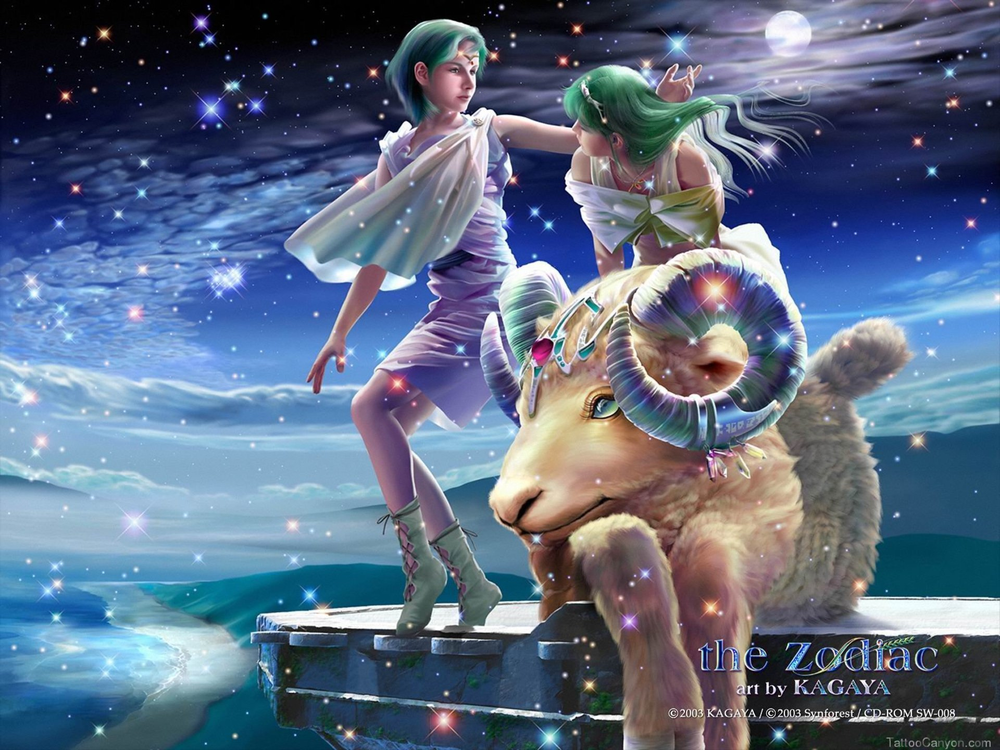
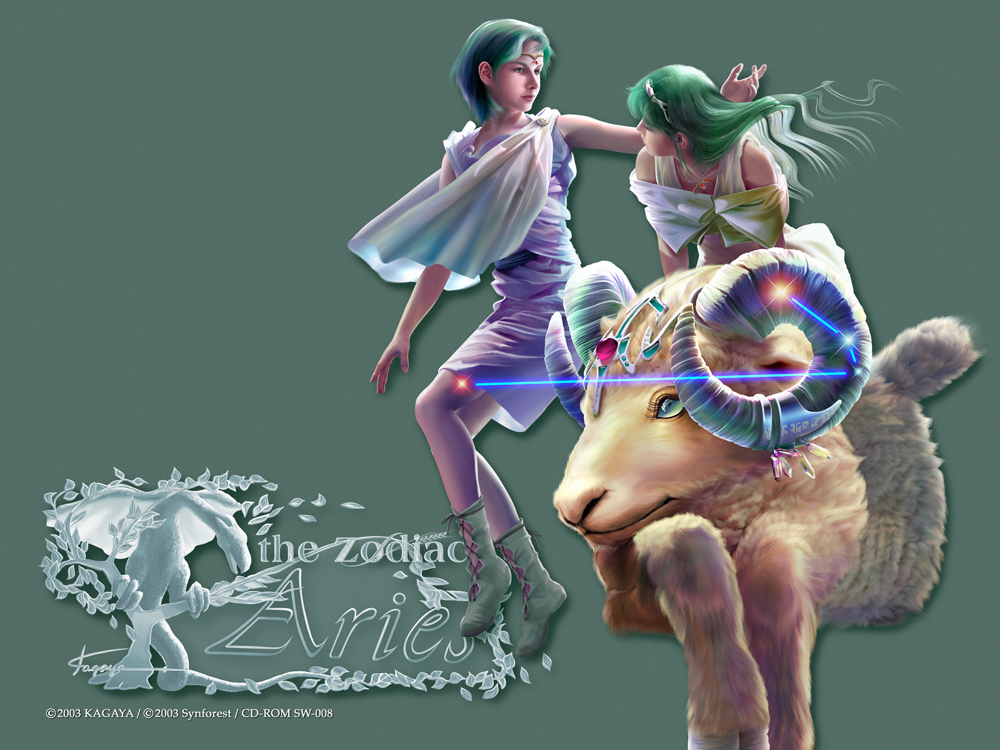
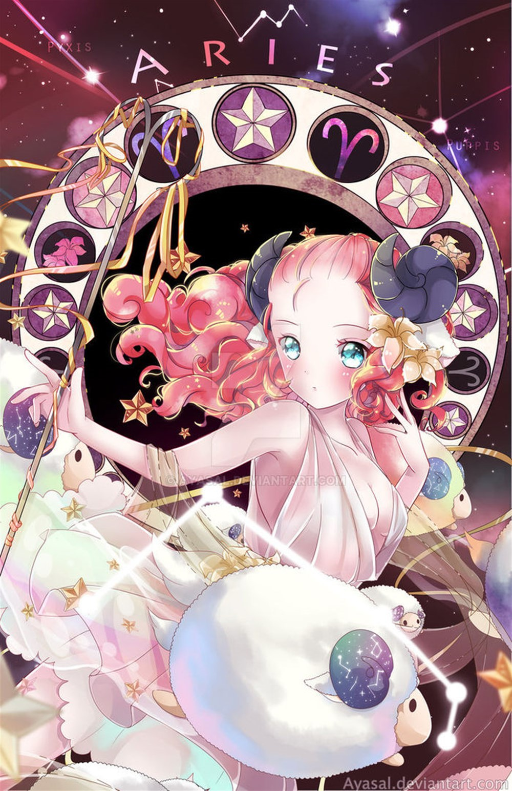

BẠCH DƯƠNG
Là biểu tượng của lửa. Sao chiếu mệnh là sao Hoả và sao Diêm vương. Những người cung Aries có một sức khoẻ tốt, ít mắc bệnh, và họ luôn có nhiều sáng kiến. Họ rất năng nổ và thường hành động theo bản năng. Đôi lúc, họ mắc phải sai lầm vì tính hấp tấp, bốc đồng của họ. Họ có tính độc lập cao và rất dũng cảm.
Thỉnh thoảng, người cung Aries bị cho là những người coi mình là trung tâm, nhưng họ không phải như thế. Họ có thể rất lãng mạn. Họ cần tình yêu và sự tin tưởng. Họ có khuynh hướng trở thành một người chủ trong công việc và đời sống riêng tư. Những nghề nghiệp mà cung Aries có thể làm: người thiết kế, làm đại lý, nhà văn, luật sư, chính trị gia, diễn viên. Và những nghề nghiệp này sẽ làm cho họ có vẻ như là một người sống lập dị.
Một điểm đặc trưng quan trọng nhất của cung Aries là họ thường xuyên giải toả phần năng lượng thừa trong người qua thể thao. Thỉnh thoảng họ có biểu hiện như một người thô lỗ và hung bạo. Họ yêu say đắm, nhưng họ thường không chung thuỷ. Cung Aries thích phiêu lưu, mạo hiểm. Khái niệm “thứ tự” không có trong từ điển của họ. Tính tình của họ rất khó đoán trước, và điều này làm cho họ thêm quyến rũ.
2, Mô tảBạch Dương là ngôi sao của những người liều lĩnh và kiên quyết. Một khi họ đã quyết định, không gì có thể ngăn cản. Cơ thể họ tràn đầy năng lượng và tinh thần tranh đua. Họ là người tiên phong trong mọi việc.
Đừng bao giờ phê phán sai lầm của họ gay gắt, họ có thể trở nên nguy hiểm đấy. Họ thường là những người bạn lập dị, người lãnh đạo tuyệt vời và là nhà chính trị tài ba. Họ thích giám sát và tổ chức công việc. Đừng lảng tránh họ vì nghĩ rằng bản tính của họ xấu. Thực chất, họ rất thân thiện, tốt bụng và rộng lượng. Họ hợp với người cung Nhân Mã.
3, Tính cách cơ bảnGiống như con vật tượng trưng của mình, những người thuộc chòm Bạch Dương luôn không thích nghe theo sự chỉ huy của người khác, mà thích tự mình làm việc. Mỗi con cừu đầu đán trong bãi chăn của nó cần phải chiến đấu với những con cừu chống đối mới để đến chứng minh mình là thống soái bầy cừu.
Người thuộc loại hình tính cách của chòm sao này cũng có động lực bên trong như vậy, họ dành phần lớn thời gian và tinh lực để chứng minh mình là người ưu tú nhất; phái nữ thuộc chòm Bạch Dương cũng như vậy, họ không an phận đóng vai trò của một “người phụ nữ nhỏ bé”, trong cuộc sống họ cũng không thích chịu sự thống trị của nam giới.
Cả nam và nữ thuộc chòm Bạch Dương đều có một loại bản tính sẵn sàng đón nhận thử thách giống như phong cách của những con cừu đầu đàn; đó chính là sự chuẩn bị lúc nào cũng có thể khắc phục được khó khăn, tiếp nhận sự tấn công của đối thủ. Loại phương thức “coi tấn công là phương thức phòng thủ tốt nhất” này có khi sẽ nhận được hiệu quả tốt đẹp, nhưng nó hoàn toàn không phải là một liều thuốc linh đan thần diệu.
Trước tiên, nếu bạn quên một đám lang sói hiểm ác đang tiến về phía bạn, mà chỉ tập trung vào việc đánh chết con sói đi trước tiên thì điều này là rất sai lầm. Hơn nữa những người sinh thuộc chòm Bạch Dương không bao giờ coi trọng câu thành ngữ “Phải suy nghĩ trước khi hành động”, cái mà họ tôn sùng lại là “Do dự không quyết đoán tức là đánh mất đi thời cơ”.
Trong lĩnh vực mà mình chọn lựa, thể hiện quyền uy và dũng cảm “điếc không sợ súng” chính là hai loại hình tính cách nổi trội nhất của chòm sao. Nhưng, nếu hoàn cảnh sở tại thúc bách khiến anh ta trở thành người phải nghe mệnh lệnh từ cấp trên, mà trong lòng không thích chút nào thì hai loại hình tính cách trên hoàn toàn không phải là lúc nào cũng thể hiện ra ngoài. Trong trường hợp này, họ có thể sẽ tiếp nhận vị trí làm thuộc hạ của người khác trên biểu hiện, nhưng họ lại hoàn toàn không thích thân phận thuộc hạ của mình, nếu như việc ở dưới quyền của khác này không phải là kế hoạch mà họ có được lợi ích. Khi họ có thể thấy được hi vọng mình có thể bước lên cấp bậc cao hơn, họ sẽ đợi chờ thời cơ đến với mình.
Trong công việc làm ăn buôn bán, người thuộc chòm Bạch Dương cũng luôn luôn chờ đợi cơ hội để làm ông, bà chủ. Ngoài ra, giống như con vật tượng trưng của mình, những người này thích ở trong một quần thể chứ không muốn sống tách rời khỏi mọi người; họ cũng không hi vọng hành vi cử chỉ của mình quá khác biệt so với quần chúng. Loại tính cách này không tránh được việc khiến họ có nhiều quan niệm truyền thống hơn trong việc ăn mặc, thưởng thức và phương thức hành vi, không sáng tạo cái mới khác người, không một mình một kiểu.
Vì con cừu đầu đán thực sự đã được tạo hoá giao cho nhiệm vụ phải bảo vệ đàn cừu của nó; vì vậy những người thuộc chòm Bạch Dương trong cuộc sống hoặc trong sự nghiệp cũng thể hiện ra những bản năng bảo vệ đối với những người dựa vào họ. Nếu người ngoài, trong hành vi hoặc ngôn ngữ, dám xâm phạm đối tượng bảo vệ của họ, thì họ nhất định sẽ ưỡn thẳng người lên hành động vì đạo nghĩa, không sợ đối phương mạnh hơn họ, có thế lực hơn họ.
Chòm Bạch Dương giàu tinh thần cạnh tranh, họ không giảo hoạt giả tạo, lừa gạt người khác, họ có một loại cảm giác danh dự giống như kiểu phong cách thời kỳ trung thế kỷ, hành vi cử chỉ của họ lúc nào cũng để lộ ra một phong độ kị sĩ. Vì vậy khi họ gặp phải những kẻ lừa gạt hoặc hai mặt, hơn nữa có khả năng khôi phục rất mạnh, sau khi gặp phải những trắc trở, họ có thể rất nhanh chóng đứng dậy, tiếp tục tiến lên với một tinh thần phấn chấn.
4, Phương thức tư duy, kỹ xảo giao lưu và khả năng thích ứng công việcNhững người thuộc chòm Bạch Dương cũng có nét giống như con vật tượng trưng, tức là có khuynh hướng hành động trước, sau đó mới suy nghĩ : Họ luôn vội vàng hành sự, không tốn thời gian vào việc suy xét lý tính và cân nhắc đắn đo. Khi cần phải quyết đoán kịp thời vượt qua những chướng ngại, mở ra một vùng đất mới, hoặc khi phải dùng phương thức “ hai đội quân đánh nhau đội nào dũng cảm thì dội đó thắng” để hoàn thành những nhiệm vụ tưởng như không thể hoàn thành được, họ luôn có thể làm rất xuất sắc.
Khi họ làm những công việc cần thiết phải có kế hoạch chu đáo, cần có tầm nhìn xa trông rộng, thì họ làm không được tốt như thế. Kích động, liều lĩnh khiến cho họ bị lộ ra điểm yếu trước những đối thủ đa mưu túc trí, giỏi tính toán, va cuối cùng bị họ đánh bại. Khi tuỳ tiện, hành sự cho họ phạm phải những sai lầm nguy hiểm, họ lại nhất định không dám thừa nhận mình làm sai. Hầu hết không có một người lãnh đạo lạ cam tâm tình nguyện thừa nhận là mình sai, hơn nữa những người có loại hình tính cách thuộc chòm Bạch Dương chính là những người tôn sùng quyền uy. Nhưng, nếu mãi mãi không thừa nhận những sai lầm mình đã phạm phải, như thế thì trong cuộc sống của bạn sẽ tái phạm hết lần này đến lần khác những sai lầm giống nhau.
Họ luôn muốn người khác coi mình là một nhà tư tưởng và mọt người hành động mẫn cảm, lời nói họ xem ra không được thoả đáng, đúng mức. Trong mắt họ, những câu nói ngoại giao và những lời nói đường mật ngọt ngào chỉ là lãng phí thời gian, họ thích những người đơn giản thẳng thắn, ngắn gọn đi thẳng vào vấn đề.
Đương nhiên, xuất phát điểm của họ là tốt, nhưng cách làm của họ không có lợi trong việc kết bạn cảm hoá mọi người. Họ nhanh mồm nhanh miệng, và ngữ khí luôn khiến cho mọi người khác phải nghe lời họ nói. Một số người thuộc loại hình tính cách này khi nói chuyện lại có ngữ khí ổn hoà dịu dàng, cho dù mỗi câu mà họ nói ra đều muốn khiến cho người nghe nhận thức tính cấp bách của sự việc, người nghe phải tập trung toàn bộ tinh lực để nghe rõ từng câu mà anh ta nói. Loại tình trạng này thường phát triển thành một loại hình thức giao lưu đơn phương, khi giao lưu với họ, người khác luôn là những người tiếp thu bị động.
Tinh lực sung mãn nhưng thiếu lòng nhẫn nại, thích mạo hiểm nhưng dễ nổi cáu; những điều này đều là những miêu tả chân thực về chòm Bạch Dưong. Nói một cách đơn giản, cách tư duy của họ và kỹ xảo giao lưu khiến họ có thể nhanh chóng tiến lên, gia nhập vào hàng ngũ những người ưu tú, nhưng họ lại không thể duy trì được lâu sự tôn sùng của quần chúng.